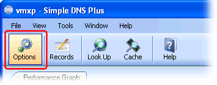

Windows 98se and later Windows versions have a built-in "Internet Connection Sharing" (ICS) feature.
This feature is a very simple NAT server, DNS proxy, and DHCP server (a.k.a. "DHCP allocation service") combination which makes it easy to share the Internet connection of one PC with other PCs on a local area network.
If you run Simple DNS Plus on the computer that shares the Internet connection, ICS may conflict with Simple DNS Plus because it uses the same TCP/IP ports.
ICS listens for DNS requests on the private side network connection (IP 192.168.0.1 port 53) and forwards these to the DNS server that the ICS computer is configured to use.
And it listens for DHCP requests on the private side network connection (IP 192.168.0.1 port 67) and assigns clients IP addresses in the 192.168.0.xxx range.
This is not configurable in any way.
Workaround for Windows 2000 and later
If the computer sharing the Internet connection has two network cards with fixed IP addresses (one for the Internet and one for the local area network), configure Simple DNS Plus to listen on the Internet IP address only.
Otherwise configure Simple DNS Plus to listen on 127.0.0.1 only.
In the Simple DNS Plus main window click the "Options" button:

Select "Inbound Requests" in the left list, select "On the IP addresses checked below", make sure only 127.0.0.1 or the Internet IP address is checked, and click the "OK" button to save your changes:
Workaround for Windows Me (Millennium Edition)
If the computer sharing the Internet connection has two network cards with fixed IP addresses (one for the Internet and one for the local area network), configure Simple DNS Plus to listen on the Internet IP address only (see above).
Unfortunately you cannot run Simple DNS Plus on a Windows Me computer with ICS enabled if you do not have a fixed Internet IP address.
Listening for DNS requests only on 127.0.0.1 (like with later Windows version - see above) doesn't work because ICS on Windows Me blocks this.
And you cannot disable the ICS DNS proxy and DHCP server either (like in Windows 98se - see below).
Workaround for Windows 98se (Second Edition)
On Windows 98se, you can disable the ICS DNS proxy and DHCP server through the registry.
(You don't need these when running Simple DNS Plus on the same computer)
Using the Windows Start menu, select the "Run..." function and type "regedit" to open the registry editor.
Select the following registry location:
HKEY_LOCAL_MACHINE\System\CurrentControlSet\Services\ICSharing\Settings\General
To turn off the ICS DNS Proxy, change the "EnableDNS" value to 0 (zero).
To turn off the ICS DHCP server, change the "EnableDHCP" value to 0 (zero).
You will need to restart your computer for changes to these settings to take effect.